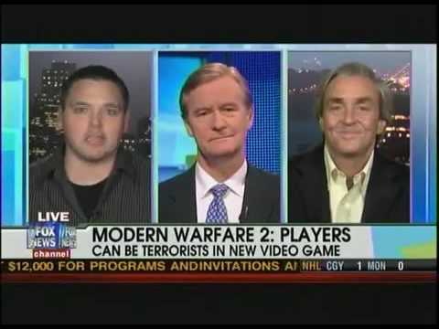

Games have had very many controversies in their time of being around. Most controversies really started to pick up around the 90's, with more mature like games coming up around this time. People started saying stuff like "Games are making our children violent" and this never really went away. In DOOM, some teens made a WAD of their school annddd this was a really big no-no at the time. Call of Duty: Modern Warfare 2 puts you on a mission where you shoot up an airport as a spy. Of course, the media blew this out of the water too. Either they were ignorant of the context, or they were just blantantly ignoring the context to make their argument against games.
That's just controversies though. Other things in history have had an impact on games. After 9/11, some games made some big changes to their stories. For example, Metal Gear Solid 2; A big machine crashes into Manhattan, and after a battle, the main character was supposed to cut down a flag to put on the villain. Metal Gear Solid 2 was released in November of 2001. They had to make changes to this final scene quickly because of the incident that did not happen too long ago in that time. Resulting in a very strange ending that had some weird skips and just didn't make all that much sense. The scenes showing destruction in the city were basically removed, and the american flag being cut down was also removed. The japanese spelling of the main characters name was even changed from katakana to kaiji, since the former resembled "Bin Laden" in Japanese. Just another interesting fact.
